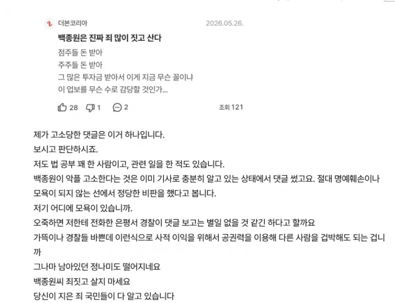

여기 개드립 몇몇 빽보이들은 고소에 대해
여전히 통쾌하다, 깨소금이다 이러고 있던데
과연 이거보고도 그런말이 나올까

여기 개드립 몇몇 빽보이들은 고소에 대해
여전히 통쾌하다, 깨소금이다 이러고 있던데
과연 이거보고도 그런말이 나올까
기분상해죄 ㄷㄷㄷ
그건 여시만되잖아
나야!!!! 나야 씨발 나라고 씨발새끼야!!! 오늘 밤 주인공은 나야나 나야나 나라고 시박새꺄
이제 빽가네 민원신고 , 고발 엄청 늘겠다 ㅎ
상장사가 자기네 주주들 한탄하는글 고소하는건 정말 듣도보도 못하긴함ㅋㅋㅋㅋ
와 저정도도 고소한다고?
현존 대한민국 최고 병신 ㅋㅋ
분석글보면 인테리어 업체라고 하던데
????????????????저게 고소거리라고?
기소유예로 끝날듯
무죄랑 기소유예랑 다른거다
알아.
내가 어이없는 댓글로 시덥잖은 고소 먹어봐서 앎. ㅋㅋ
그냥 무혐의 나오고 끝날꺼같은데
족토 어디감
한명회가 생각 나네 ㅋㅋㅋㅋㅋ
뭐 고소하는김에 애매한거까지 싹~ 보쌈해서 고소했겠지뭐 ㅋㅋㅋㅋㅋㅋ